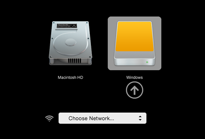

-
Shut down the computer while leaving the USB stick plugged in.
Plug in the other Tails USB stick that you want to install from.
-
Switch on the computer and immediately press-and-hold the Option key (Alt key) until a list of possible startup disks appears.

-
Choose the USB stick and press Enter. The USB stick appears as an external hard disk and might be labeled EFI Boot or Windows like in the following screenshot:

If the USB stick does not appear in the list of startup disks:
- Make sure that you have verified your download of Tails.
- Try installing again on the same USB stick.
- Try installing on a different USB stick.
- Try using the same USB stick to start on a different computer.
If your computer still does not display the Boot Loader, it might currently be impossible to start Tails on your computer.
-
If your Mac displays the following error:
Security settings do not allow this Mac to use an external startup disk.
Then you have to change the settings of the Startup Security Utility of your Mac to authorize starting from Tails.
To open Startup Security Utility:
Turn on your Mac, then press and hold Command(⌘)+R immediately after you see the Apple logo. Your Mac starts up from macOS Recovery.
When you see the macOS Utilities window, choose Utilities ▸ Startup Security Utility from the menu bar.
When you are asked to authenticate, click Enter macOS Password, then choose an administrator account and enter its password.

In the Startup Security Utility:
Choose No Security in the Secure Boot section.
Choose Allow booting from external media in the External Boot.
To still protect your Mac from starting on untrusted external media, you can set a firmware password, available on macOS Mountain Lion or later. A firmware password prevents users who do not have the password from starting up from any media other than the designated startup disk.
If you forget your firmware password you will require an in-person service appointment with an Apple Store or Apple Authorized Service Provider.
Read more on Apple Support about:
If the computer starts on Tails, the Boot Loader appears and Tails starts automatically after 4 seconds.

mac startup disks.inline